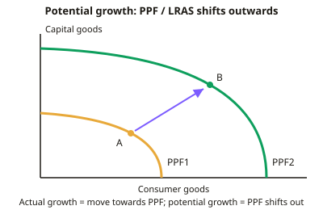

A-level Economics Year 12 · Topic 9
Economic performance
This topic examines how well the economy performs on growth, inflation, jobs, trade and fairness.
We will look at the causes, costs and benefits of economic growth, and the causes and effects of inflation and unemployment.
Then we cover current account imbalances, exchange rates, inequality and poverty, and wider measures of living standards and sustainability.
- 8 subtopics
- 334 questions
- Free: 9.1 notes and 10 questions
In this topic
- 9.1Causes of economic growthFree below · 31 questions
- 9.2Costs and benefits of economic growthOpen in Full Marks · 33 questions
- 9.3Causes and effects of inflation, deflation and disinflationOpen in Full Marks · 55 questions
- 9.4Unemployment: types, causes and effectsOpen in Full Marks · 66 questions
- 9.5Causes and consequences of current account deficits and surplusesOpen in Full Marks · 18 questions
- 9.6Exchange rates and their effect on the economyOpen in Full Marks · 62 questions
- 9.7Causes and effects of inequality and povertyOpen in Full Marks · 36 questions
- 9.8Environmental sustainability and wider measures of living standardsOpen in Full Marks · 33 questions
9.1 · Free notes
Causes of economic growth

Key points
- Economic growth is an increase in an economy's real output, measured by the annual percentage change in real GDP (GDP adjusted for inflation). Growth rate = (GDP₁ − GDP₀) ÷ GDP₀ × 100.
- Real GDP per capita (real GDP ÷ population) is a better guide to average living standards. Growth does not raise living standards if population grows faster than output.
- Actual growth is a rise in real GDP: a movement towards the PPF, or a rightward AD shift using spare capacity (a negative output gap). Potential growth (long-run or trend growth) is a rise in productive capacity, shown by an outward shift of the PPF or LRAS.
- Short-run (demand-side) causes are rises in the components of AD (C + I + G + (X − M)). Examples are lower interest rates, tax cuts, higher confidence or a weaker exchange rate. The multiplier magnifies the effect.
- Long-run (supply-side) causes are increases in the quantity or quality of the factors of production: land, labour, capital and enterprise.
- Capital accumulation: net investment (gross investment − depreciation) raises the capital stock and labour productivity (output per worker or per hour). Investment depends on interest rates, confidence and access to finance.
- Human capital: spending on education, training and health raises labour quality and productivity. Labour supply also grows through migration, higher participation rates, population growth or later retirement.
- Technological progress, innovation and R&D raise total factor productivity, so more is produced from the same inputs. This is the main driver of long-run growth in advanced economies.
- Natural resources (new discoveries or extraction methods) and enterprise (entrepreneurs, start-ups, competition) also shift productive capacity outwards.
- Trade and FDI: openness allows specialisation and comparative advantage, larger markets, technology transfer and economies of scale. Export-led growth has driven many emerging economies.
- Institutions: secure property rights, the rule of law, low corruption, stable government and good infrastructure encourage investment. UK productivity growth has been weak since 2008 (the productivity puzzle).
- Evaluate: demand-side growth is quicker but may be inflationary once capacity is reached. Supply-side growth is slower, with long time lags and high costs, and is uncertain.
In more detail
- Worked growth: real GDP rises from £2,300bn to £2,346bn → growth = 2%. With population growth of 0.8%, real GDP per capita grows by about 1.2%.
- Rule of 70: at 2% growth a year, real GDP doubles in about 70 ÷ 2 = 35 years; at 7%, it doubles in about 10 years.
- Catch-up growth: poorer countries can grow quickly by adopting existing technology, as South Korea did, rising from one of the poorest countries in the 1960s to a high-income economy.
- Exam tip: separate short-run causes (rising AD using spare capacity) from long-run causes (more or better factors of production, technology and institutions).
Practice
Causes of economic growth: 10 questions
Pick an answer to check it, or open the answer for the explanation.
1. Which of the following would be shown by an outward shift of the long-run aggregate supply (LRAS) curve?
- Potential economic growth
- A rise in the price level only
- A fall in the output gap
- Movement from inside to on the PPF
Show answer
A: Potential economic growth. An outward LRAS (or PPF) shift shows a rise in productive capacity, i.e. potential or long-run growth. Moving from inside to on the PPF is actual growth using spare capacity.
2. Real GDP rises from £2,000bn to £2,060bn. What is the rate of economic growth?
- 3%
- 6%
- 2%
- 3.5%
Show answer
A: 3%. Growth = (2,060 − 2,000) ÷ 2,000 × 100 = 3%.
3. Nominal GDP rises by 5% in a year while the general price level rises by 3%. Approximately what is real GDP growth?
- 15%
- 3%
- 2%
- 8%
Show answer
C: 2%. Real growth is roughly nominal growth minus inflation: 5% − 3% = 2%. Nominal figures include price rises, so they overstate growth in output.
4. With a large negative output gap, which would most likely cause actual but not potential growth?
- Increased spending on R&D
- A rise in the school leaving age
- Greater net investment in machinery
- A cut in interest rates raising consumer spending
Show answer
D: A cut in interest rates raising consumer spending. Higher consumption raises AD and uses spare capacity, so actual growth. The other options increase productive capacity, so they raise potential growth.
5. A government expands funded apprenticeships. Through which factor does this most directly raise long-run growth?
- A larger working-age population
- Greater human capital and labour productivity
- Lower inflation expectations
- A rise in the exchange rate
Show answer
B: Greater human capital and labour productivity. Training improves the quality of labour (human capital), raising output per worker and shifting LRAS outwards.
6. Output of £450m is produced by 15,000 workers. What is labour productivity?
- £30,000 per worker
- £33,333 per worker
- £3,000 per worker
- £300,000 per worker
Show answer
A: £30,000 per worker. Productivity = output ÷ workers = £450,000,000 ÷ 15,000 = £30,000 per worker.
7. Gross investment is £50bn and capital depreciation is £30bn. What is net investment, and what happens to the capital stock?
- £30bn; capital stock unchanged
- £20bn; capital stock rises
- £20bn; capital stock falls
- £80bn; capital stock rises
Show answer
B: £20bn; capital stock rises. Net investment = gross investment − depreciation = £20bn. It is positive, so the capital stock grows and productive capacity increases.
8. Discovery of large new natural gas reserves in a country is most likely to cause which of the following?
- An outward shift of the PPF
- A fall in potential output
- A leftward shift of LRAS
- A movement along the PPF
Show answer
A: An outward shift of the PPF. More natural resources (land) increases the quantity of a factor of production, shifting the PPF and LRAS outwards.
9. Real GDP is 3% below the economy's potential output. Which statement is most accurate?
- The PPF must have shifted inwards
- There is a positive output gap and inflationary pressure
- The economy is at full employment
- There is a negative output gap and spare capacity
Show answer
D: There is a negative output gap and spare capacity. Output gap = actual − potential output. Actual output below potential is a negative gap, with spare capacity and little inflationary pressure.
10. Which is an institutional factor that can raise long-run economic growth?
- Stronger enforcement of property rights
- A temporary cut in VAT
- A rise in the exchange rate
- A one-off rise in consumer confidence
Show answer
A: Stronger enforcement of property rights. Secure property rights encourage investment and enterprise, raising productive capacity. The other options mainly affect short-run AD.
Keep going in Full Marks
Full Marks has 31 questions on Causes of economic growth (21 more than here), set out in practice levels. You also get notes and 3D models for all 8 subtopics of Economic performance, plus games, timed exams and past papers.